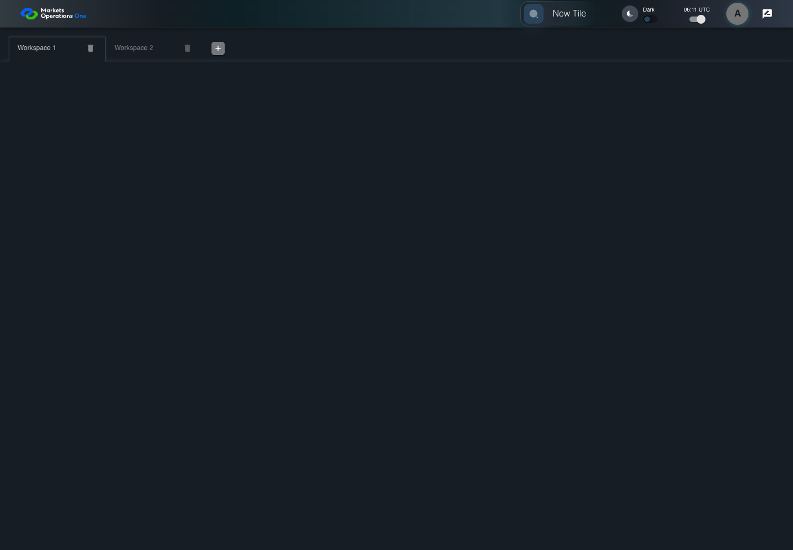
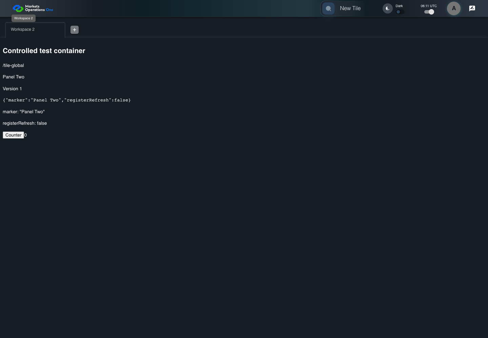

UI-SHL-013 remove selected first workspace
PASS · application/run-050/ui-shl-013-remove-selected-first-workspace-18387668686c-attempt-1 · ACTUAL_APPLICATION_LOCAL_SERVICES
Actual current React shell and browser storage. Controlled login/validation/activity renewal, UI-USER-01 permissions, catalog, and SystemJS React component. Markers, counter, and registered refresh callback are controlled fixture observations. No real business tenant or BFF authorization acceptance.
2026-10-22T06:11:01.913Z to 2026-10-22T06:11:04.757Z
Assertions and result · Artifact manifest · Exact run inputs and source hashes
Result SHA-256:cf22d4772183d2234513ff69c0ebc7c6a4c1022d3904b29741ea69342cb49622Screenshot capture: CAPTURED. Named frames: 9.
Step screenshot bindings: COMPLETE. 8/8 canonical steps have execution screenshots.
Bindings measure structural coverage only. They do not establish screenshot content quality or relevance.
Screenshot content review: NOT_REVIEWED. Recorded context: 0/9 frames. Identical image bytes: 4 repeated frames. Recorded context does not establish human visual review.
Canonical step timeline
Given User A is authenticated as fixture UI-USER-01 with the case-specific permissions
Execution: PASSED.
1. step-01 Visible state after step 1: Given User A is authenticated as fixture UI-USER-01 with the case-specific permissions
2026-10-22T06:11:02.927Z · 1440×1000
Step: /Users/lushevol/code/github/ratan-release-impact/workbench/tasks/ui-test-coverage-20261022/test-cases.md:5776
SHA-256:fe454dca247b29eab48d85ba0dfa932dbb6031d9ae2caaf88354bde2871fe266And W1 and W2 exist and W1 is selected
Execution: PASSED.
2. step-02 Visible state after step 2: And W1 and W2 exist and W1 is selected
2026-10-22T06:11:03.008Z · 1440×1000
Step: /Users/lushevol/code/github/ratan-release-impact/workbench/tasks/ui-test-coverage-20261022/test-cases.md:5777
SHA-256:332f9c13b2c938eab7ba73f23709921cefa3e6a9a10732813398300d90c75f6dWhen User A clicks icon button named "delete" inside the W1 workspace tab
Execution: PASSED.3. step-03 Visible state after step 3: When User A clicks icon button named "delete" inside the W1 workspace tab
2026-10-22T06:11:03.132Z · 1440×1000
Step: /Users/lushevol/code/github/ratan-release-impact/workbench/tasks/ui-test-coverage-20261022/test-cases.md:5778
SHA-256:89b0e51384ec09478e67f01a9738844d1c0bda02ddc983ce5caed11cfc8d4143Then tab with source identity "Workspace Name textbox value Workspace 1" inside the shell tablist named "workspaces" is absent
Execution: PASSED.
4. step-04 Visible state after step 4: Then tab with source identity "Workspace Name textbox value Workspace 1" inside the shell tablist named "workspaces" is absent
2026-10-22T06:11:03.215Z · 1440×1000
Step: /Users/lushevol/code/github/ratan-release-impact/workbench/tasks/ui-test-coverage-20261022/test-cases.md:5779
SHA-256:89b0e51384ec09478e67f01a9738844d1c0bda02ddc983ce5caed11cfc8d4143Image bytes match frame 3. An unchanged image can be valid for consecutive assertions. This match does not establish correct step content.
And tab with source identity "Workspace Name textbox value Workspace 2" inside the shell tablist named "workspaces" is selected
Execution: PASSED.
5. step-05 Visible state after step 5: And tab with source identity "Workspace Name textbox value Workspace 2" inside the shell tablist named "workspaces" is selected
2026-10-22T06:11:03.292Z · 1440×1000
Step: /Users/lushevol/code/github/ratan-release-impact/workbench/tasks/ui-test-coverage-20261022/test-cases.md:5780
SHA-256:be0f993694a8323e17c6188c7d08b64ea6b268954b13c0d41f95d4d5927ad12bAnd the tab count inside the tablist named "workspaces" equals 1
Execution: PASSED.6. step-06 Visible state after step 6: And the tab count inside the tablist named "workspaces" equals 1
2026-10-22T06:11:03.357Z · 1440×1000
Step: /Users/lushevol/code/github/ratan-release-impact/workbench/tasks/ui-test-coverage-20261022/test-cases.md:5781
SHA-256:be0f993694a8323e17c6188c7d08b64ea6b268954b13c0d41f95d4d5927ad12bImage bytes match frame 5. An unchanged image can be valid for consecutive assertions. This match does not establish correct step content.
And text with text "Panel Two" inside the remaining W2 tabpanel is visible
Execution: PASSED.
7. step-07 Visible state after step 7: And text with text "Panel Two" inside the remaining W2 tabpanel is visible
2026-10-22T06:11:04.207Z · 1440×1000
Step: /Users/lushevol/code/github/ratan-release-impact/workbench/tasks/ui-test-coverage-20261022/test-cases.md:5782
SHA-256:110dbe8ed35015d03db7a7fc216d31fbe221a879120d4cb50fe3dbc672731883And icon button named "delete" inside the remaining W2 workspace tab is absent
Execution: PASSED.
8. step-08 Visible state after step 8: And icon button named "delete" inside the remaining W2 workspace tab is absent
2026-10-22T06:11:04.263Z · 1440×1000
Step: /Users/lushevol/code/github/ratan-release-impact/workbench/tasks/ui-test-coverage-20261022/test-cases.md:5783
SHA-256:110dbe8ed35015d03db7a7fc216d31fbe221a879120d4cb50fe3dbc672731883Image bytes match frame 7. An unchanged image can be valid for consecutive assertions. This match does not establish correct step content.
Additional named frames

The final visible state after the named test assertions.
2026-10-22T06:11:04.376Z · 1440×1000Step: Test source: /Users/lushevol/code/github/ratan-release-impact/workbench/e2e/audit-specs/shell-expanded.spec.ts:52
SHA-256:
110dbe8ed35015d03db7a7fc216d31fbe221a879120d4cb50fe3dbc672731883Image bytes match frame 8. An unchanged image can be valid for consecutive assertions. This match does not establish correct step content.
Screenshots establish visible state only. Assertions and traces support functional claims.